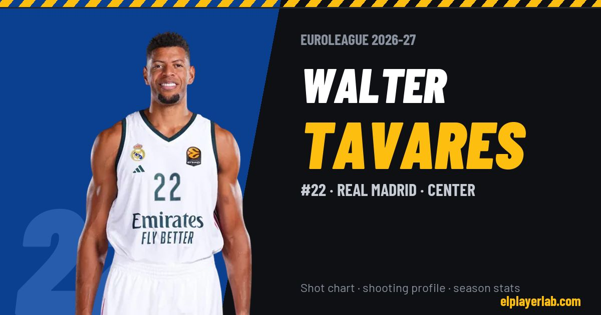

Real Madrid · Euroleague 2026-27
Walter Tavares
#22 · Center · Real Madrid · 2026-27 · 3 games · 10.0 pts · 8.0 reb · 0.0 ast a game

- Number
- 22
- Position
- Center
- Height
- 220 cm
- Weight
- 125 kg
- Born
- 1992-03-22
- Country
- Cabo Verde
Career
- Real Madrid 2017-2027
- Raptors 905 2017
- Cleveland Cavaliers (NBA) 2016-2017
- Raptors 905 2016-2017
- Bakersfield Jam (loan) 2016
- Canton Charge (loan) 2015
- Austin Spurs (loan) 2015-2016
- Atlanta Hawks (NBA) 2015-2016
- La Palma (loan) 2011-2013
- Gran Canaria 2009-2015
Euroleague Player Lab: shot charts, shooting profiles and season stats for every player, rebuilt after every game.